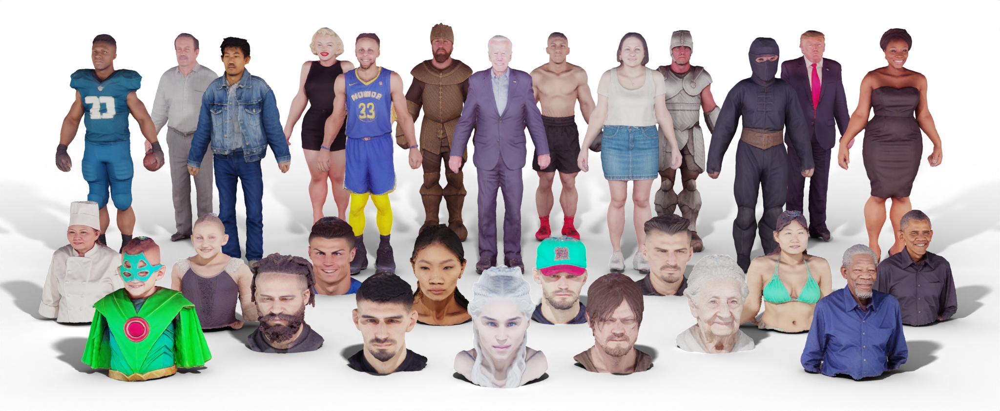

Ruizhi Shao (邵睿智)
Ph.d Student
Department of Automation
Tsinghua University (THU), Beijing, China
Email:shaorz20@mails.tsinghua.edu.cn
CV • Google Scholar • GitHub • Twitter|
|
Ruizhi Shao (邵睿智) Ph.d Student Department of Automation Tsinghua University (THU), Beijing, China Email:shaorz20@mails.tsinghua.edu.cn CV • Google Scholar • GitHub • Twitter |
|
|
News
ThreeStudio: A Unified Framework For 3D Content Creation |
Control4D: Efficient 4D Portrait Editing with Text | |
 |
HumanNorm: Learning Normal Diffusion Model for High-quality and Realistic 3D Human Generation |
HHMR: Holistic Hand Mesh Recovery by Enhancing the Multimodal Controllability of Graph Diffusion Models | |
Gps-gaussian: Generalizable pixelwise 3d gaussian splatting for real-time human novel view synthesis | |
DreamCraft3D: Hierarchical 3D Generation with Bootstrapped Diffusion Prior | |
|
Tensor4D : Efficient Neural 4D Decomposition for High-fidelity Dynamic Reconstruction and Rendering |
CloSET: Modeling Clothed Humans on Continuous Surface with Explicit Template Decomposition | |
FloRen: Real-time High-quality Human Performance Rendering via Appearance Flow Using Sparse RGB Cameras | |
|
DiffuStereo: High Quality Human Reconstruction via Diffusion-based Stereo Using Sparse Cameras |
|
Learning Implicit Templates for Point-Based Clothed Human Modeling |
DoubleField: Bridging the Neural Surface and Radiance Fields for High-fidelity Human Reconstruction and Rendering | |
|
LocalTrans: A Multiscale Local Transformer Network for Cross-Resolution Homography Estimation |
DeepMultiCap: Performance Capture of Multiple Characters Using Sparse Multiview Cameras |
Honors and Awards